Nos quatre institutions forment ensemble un lieu où la nature et les sciences sont à l'honneur,
un Espace pour la vie.
Biodôme
Les écosystèmes du Biodôme ont été conçus en fonction d'une visite autonome : des bornes d'interprétation sont disposées tout au long du sentier, et des animateurs sont disponibles pour répondre aux questions des visiteurs.
Surtout, ouvrez l'œil… Les animaux peuvent aller et venir et s'installent parfois dans des endroits surprenants!
- Forêt tropicale humide
- Érablière des Laurentides
- Golfe du Saint-Laurent
- Côtes du Labrador
- Îles subantarctiques
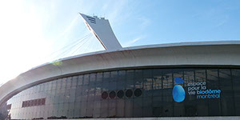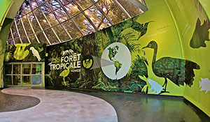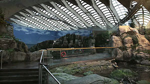Insectarium
Explorez l’univers des insectes… Lesquels sont des insectes sociaux? Pourquoi certains d’entre eux chantent-ils? Apprenez à reconnaître les espèces, découvrez le mode de vie de chacune, ses caractéristiques et son rôle écologique.
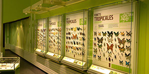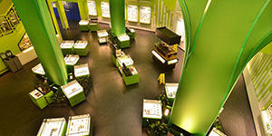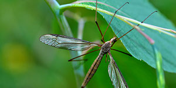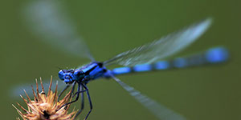Jardin Botanique
Du 18 février au
24 avril au
Jardin botanique
Papillons en liberté
Renouez avec les joies de l’enfance en vous amusant à retrouver sous le feuillage des plantes tropicales des chenilles étonnantes de diversité. Qu’elles soient vertes, jaunes ou bleues, en costume rayé ou ocellé, couvertes de cire, de poils ou d’épines, les chenilles rivalisent d’astuces pour se protéger des prédateurs… et vous surprendre!
Jardins et serres en tout temps
Explorez la beauté du Jardin à travers ses 10 serres et sa trentaine de jardins thématiques!
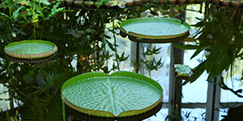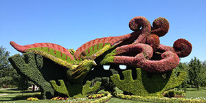Planétarium
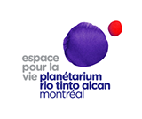Si les planètes, les étoiles et tous les phénomènes astronomiques vous passionnent, vous trouverez ici des réponses à vos questions et des renseignements généraux sur une foule de sujets relatifs à l'astronomie. Aussi, le ciel du mois et des ressources pour poursuivre vos recherches.
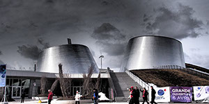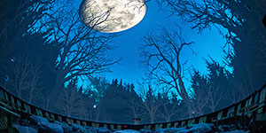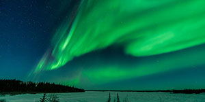